ANALYSIS-CRYPTARCHIA-DE-ANONYMISATION-OF-RELATIVE-STAKE
| Field | Value |
|---|---|
| Name | [Analysis] Cryptarchia De-anonymisation of Relative Stake |
| Slug | 189 |
| Status | raw |
| Category | Informational |
| Editor | David Rusu davidrusu@logos.co |
| Contributors | Alexander Mozeika alexander.mozeika@logos.co, Filip Dimitrijevic filip@logos.co |
Timeline
- 2026-05-28 —
d45eed2— Chore: mirror blochain specs into github/mdbook (#347)
Revision History
| Version | Changes | Date |
|---|---|---|
| 1.0.0 | Initial revision. | 2025-08-26 |
Details of derivations are in the documents Statistical inference of relative stake and Analysis of leader election process in PoS.
Stake Distribution Strategies Based on Adversarial Inference Which Uses a Naive Estimator
- The adversary observes the leader election process of a node with the relative stake .
- In time slots, he/she is able to observe wins in observations.
- For he/she uses the naive estimator of the true relative stake .
- Here , known to adversary, is the fraction of time-slots with at least one winner.
- For “accuracy” , the probability that for large is given by where is the lottery function, and . Here is the fraction of observed time-slots such that slots are observed on average.
- An example of above probability is given below.

The probability that inferred relative stake , i.e. adversarial “confidence”, as a function of the true relative stake obtained in time-slots (the number used in Cardano) when fraction of slots is observed. Here the probability that the stake of a node with the true stake (the max. stake in the Bitcoin network), represented by a red vertical line, is inferred with an “accuracy” within the fraction of relative stake , represented by red vertical dotted lines, is approx. . The red dashed horizontal line corresponds to the threshold . The blue vertical line at is the result of dividing the stake into nodes.
- Having estimated the fraction of observed time-slots and accuracy a node can use its stake , to compute the probability , i.e. the “confidence” obtained by an adversary in time-slots. For a node, it is beneficial to reduce the latter, which can be done by distributing its stake among a number of nodes. To this end, the probability is compared with some threshold and if then the stake is divided, i.e. , , etc., until .
- The main functions of the algorithm which uses to distribute the stake are as follows:
from math import erf, sqrt, log
def phi(alpha):
global f
return 1 - (1 - f)**alpha
def dphi(alpha):
global f
return -((1 - f)**alpha) * log(1 - f)
def Prob2(alpha, epsilon, T, q):
sqrt2 = sqrt(2.0)
numerator = -2.0 * erf(sqrt2 * epsilon / (2 * sqrt(phi(alpha) * (1 - phi(alpha)) / (T * q))))
denominator = (-erf(phi(alpha) * sqrt2 / (2 * sqrt(phi(alpha) * (1 - phi(alpha)) / (T * q)))) + erf(sqrt2 * (phi(alpha) - 1) / (2 * sqrt(phi(alpha) * (1 - phi(alpha)) / (T * q)))))
return numerator / denominator
- The above functions are then used to find minimum number of nodes such that distributing the stake into these nodes reduces the probability to as follows
import math
# Define parameters
T = 432000 # number of time-slots in one epoch
theta = 0.5 # adversarial confidence threshold
gamma0 = 0.1 # adversarial accuracy
a = 0.3 # fraction of compromised paths in the mixnet
r = 3 # redundancy in messages sent through the mixnet
q0 = 1 - (1 - a)**r # fraction of compromised messages
f = 0.05
n_max = 10 # maximum number of iterations
alpha0 = 0.0126 #initial stake
# Initialize relative stake alpha and delta
alpha = alpha0
epsilon = dphi(alpha) * alpha * gamma0
delta = Prob2(alpha, epsilon, T, q0)
# Loop until delta <= theta or n reaches n_max
n = 2
while delta > theta and n <= n_max:
alpha = alpha0 / n
epsilon = dphi(alpha) * alpha * gamma0
delta = Prob2(alpha, epsilon, T, q0)
n += 1
# Update alpha and Prob
alpha = alpha0 / (n - 1)
epsilon = dphi(alpha) * alpha * gamma0
delta = Prob2(alpha, epsilon, T, q0)
print("Final num. of nodes:", n-1)
print("Final alpha:", alpha)
print("Final Prob:", delta)
- The above program suggests that the stake has to be divided among 5 nodes for the adversarial confidence when of paths in the mixnet are compromised (this is , where is the number of layers, with a mixnet sampled from nodes with adversarial nodes) and each message is sent times giving for the fraction of messages being compromised.
Analysis of Naive Estimator
- The naive estimator of relative stake is obtained from the maximum likelihood (ML) estimator by setting .
- The probability that , where is true relative stake and is “accuracy”, is given by , where is the binomial distribution of number of observations , with the parameter such that is the average number of observations, and is the binomial distribution of the number of observed wins n, with the parameter such that is the average number of observed wins.
- The probability of can be interpreted as “confidence”. The probability that , given by , is also of interest. However, for , which can happen for short observation times , the estimator (and hence the probability of ) can be considered only for long observation times where the probability of the event is small.
- The bounds and (large time T) asymptotic estimates on the probability , as well as on the probability , can be obtained by adopting the results in Analysis of leader election process in proof of stake consensus model.
Numerical Results
The maximum likelihood (ML) estimator performance is dependent on the fraction of observed nodes (or the mixnet failure probability) and the number of slots . The [erformance of the estimator improves as increases, as can be seen in this plot:
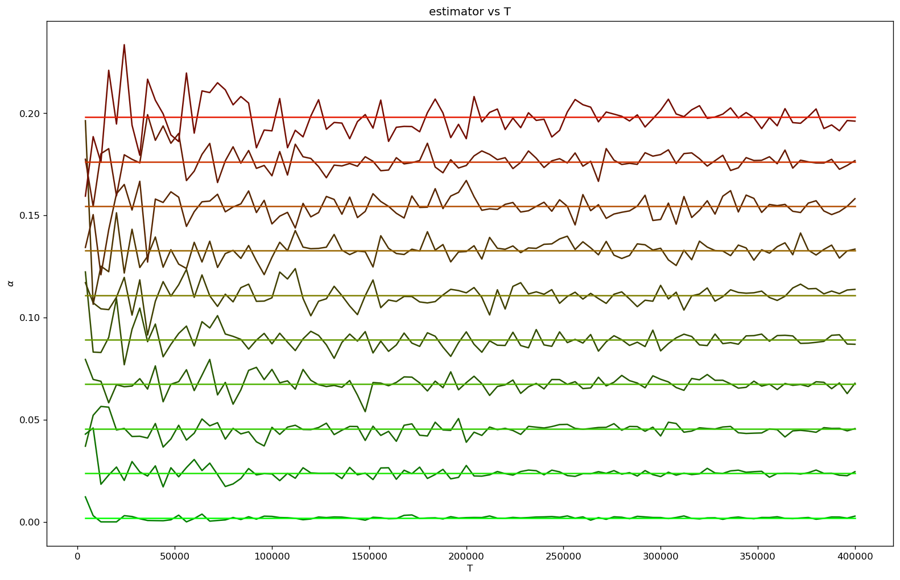
The (naive) ML estimator, given by the frequency of elections won, as a function of the number of slots plotted for a number of nodes with relative stakes . Here on average the fraction of slots was observed.
The performance of ML estimators was also evaluated using the Jaccard Index. The index evaluates the estimators’ ability to correctly classify nodes as “high” or “low” stake. The simulation was done across multiple mixnet failure probabilities .
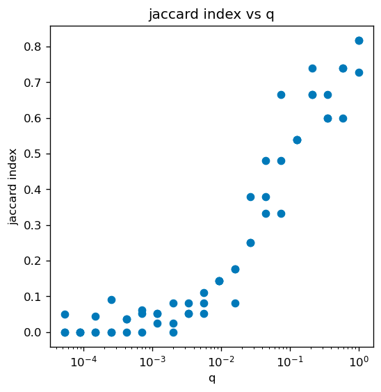
The performance of the (non-naive) ML estimator in classifying validators, measured by the Jaccard index, in the top 1pct of stakers as a function of the fraction of observed nodes, q. Here the N=2000 stake values were drawn from the distribution and T=432000. For q close 1, i.e. all nodes are observed, most high stake nodes are inferred correctly (Jaccard index is close to 1). As q (i.e. fraction of observed nodes) decreases, the accuracy decreases and for is significantly reduced (Jaccard index is close to 0).
Analysis was also done using Cardano’s real world stake values. Clearly, Cardano’s stake distribution incentives somehow seem to protect against inferring top 1pct of stakers. More analysis is needed:
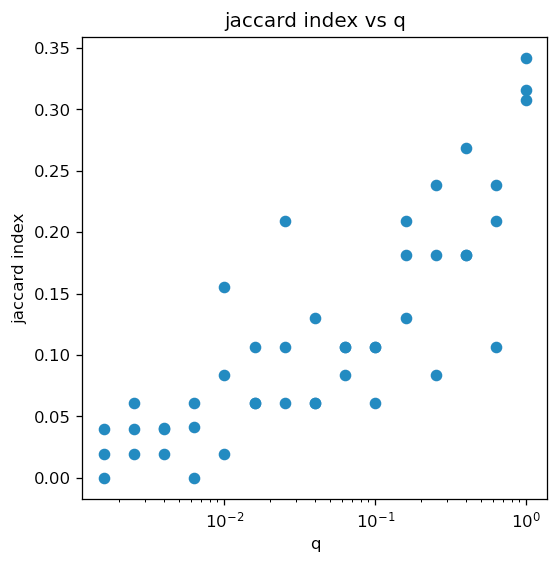
The performance of (non-naive) ML estimator in classifying validators, measured by the Jaccard index, in the top 1pct of stakers as a function of the fraction of observed nodes, q. Here T=432000 and N=2500 stake values were obtained from Cardano.
Analysis of ML Estimator: Inference of Lagrange Multiplier
The naive estimator above assumed the Lagrange multiplier, which ensures that inferred relative stake is normalized , . A more sophisticated estimator can be derived from the ML framework by inferring for a given sample.
The Lagrange multiplier is inferred by minimizing the distance between the LHS and RHS of equation (18) :
In the above, the “distance” used is the relative entropy. Computing the partial derivative w.r.t. gives us a gradient which we can then follow using gradient descent, or any other algorithm which uses a gradient, to discover the choice of which minimizes the above distance.
Inferred Distributions of Relative Stake
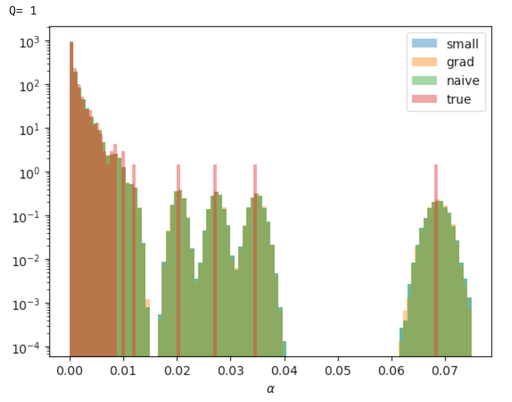
Relative stake obtained in 1000 inferences for stake distribution drawn from
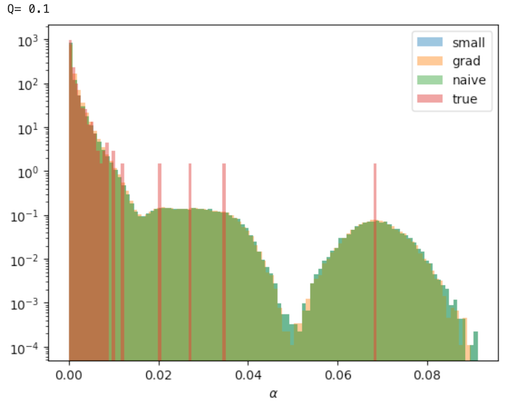
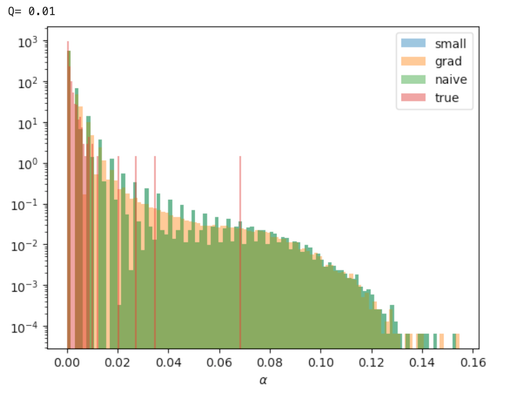
Here is the fraction of observed time-slots (or the “mixnet failure probability”) out of the total time-slots. The small, grad and naive above refer to the approximation, the inferred , and the estimators respectively. The inferred estimator produces a smoother distribution for small . The small and naive estimators produce near identical inferred distributions.
The Total of Inferred Relative Stake
The sum of all relative stake (by definition) must sum to 1. Here we plot the error in inferred total stake for the different estimators:
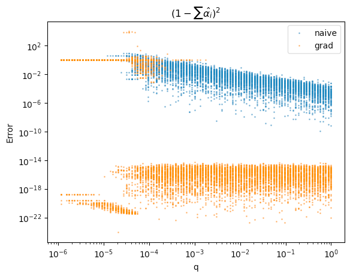
Plotting the squared distance to 1 of the sum of inferred relative stakes. The inferred estimator produces a much lower and constant error across values on this metric.
Classification Performance
Despite the reduced error in total relative stake inference, and the smoother histogram, the naive estimator performed identically to the inferred estimator when tasked to identify the top stakers of the distribution.
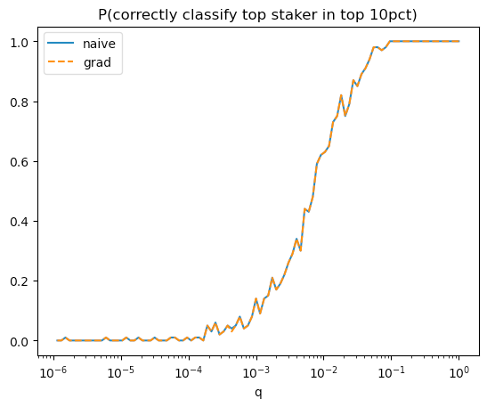
We ask the question: given the top 10% of inferred stakers, is the true top staker among those inferred top 10%.
Naive and grad estimators performed identically at this task.
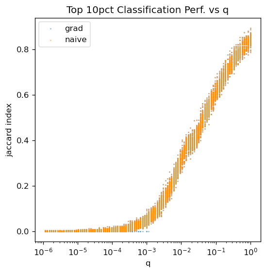
Plot of the Jaccard Index: J(inferred 90th pct, true 90th pct). High Jaccard index tells us there is a high degree of overlap between the two sets, low index tells us that the sets are nearly disjoint.
Estimator Accuracy
Here we measure the accuracy of estimators. The left plot shows inferred vs true relative stake for one simulation, right plot shows mean squared error between inferred and true relative stakes. We find that both naive and inferred estimators produce similar results.
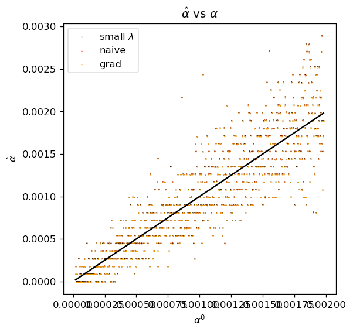
X-axis is the true relative stake, Y-axis is the inferred relative stake. Perfect inference would produce the solid black line. All estimators perform nearly identically.
Simulation parameters:
, ,
stake distribution=np.linspace(1, 100, 1000)
Simulation parameters: , ,
Simulation parameters: , ,
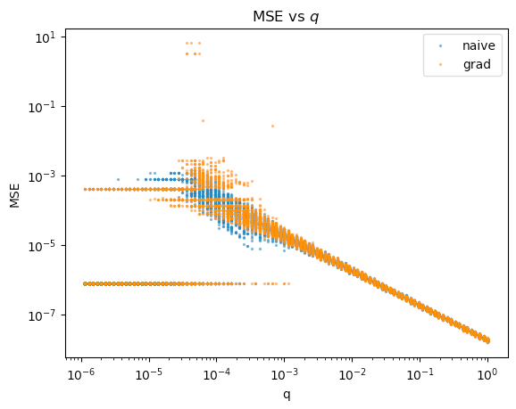
Plotting the Mean Squared Error (i.e. average squared distance between true and inferred relative stake pairs) against .
Simulation Parameters:
stake distribution = Cardano
Simulation Parameters:
Simulation Parameters:
Statistical Inference of Relative Stake
- Leader election process: at time-slot the probability of a node winning the election is given by the “lottery” function , where is the relative stake of node .
- Observation process: the outcome of the election for node is observed with the probability .
- Statistical inference: we define the log-likelihood $\mathcal{L} =\sum_{t=1}^T\sum_{i=1}^N \eta_i(t)\log P_i(s_i(t))s_i(t)=1/0iP_i(1)=\phi(\alpha_i)\eta_i(t)=1/0s_i(t)$.
- Maximisation of , subject to constraint , gives the ML estimator of relative stake which is a solution of the equation for .
- Here , i.e. the number of 1’s observed divided by the total number of observations, and is a parameter which ensures that .
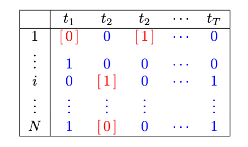
The leader election and observation processes. Node participates in the leader election (or ``lottery'') at times . The (binary) outcome of this lottery, where 0/1 corresponds to lost/won, is either observed (numbers in square brackets) or unobserved.
Appendix
Analysis of leader election process in proof of stake consensus model
File attachment: Analysis_of_leader_election_process_in_PoS.pdf
Statistical inference of relative stake
File attachment: Statistical_inference_of_relative_stake.pdf
Cardano Stake Distribution
Data was pulled from Cexplorer to determine the stake value of every pool in Cardano
File attachment: pools.csv
The histogram seems to shows it seems to follow a classic power law
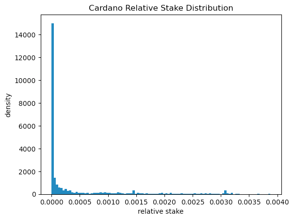
Anomalies in the Distribution
Removing the low stakers from the distribution reveals a few peaks and a sharp decline after 70MM ADA:
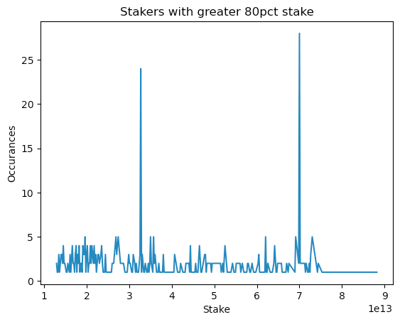
These two peaks occur at 32.7MM ADA and 69.9MM ADA respectively.
Doing some research shows that Cardano has a concept of “Pool Saturation”, that is controlled by a global “Saturation Parameter ()”. This parameter sets the target number of pools in the network. The target is enforced through a soft “stake cap”, i.e. a pool with 200 ADA when the stake cap is 100 ADA will earn the same rewards as a pool with 100 ADA.
Currently , this sets the stake cap at 64MM ADA. The IOHK blog posts suggest that there is a plan to move to in the future, which would correspond to a stake cap of 32.7MM ADA.
We suspect the peak at ~70MM ADA we see in the data is the result of pool operators who are slightly over their target of 64MM but don’t yet feel the incentive to split into smaller pools.
The other peak at 32MM ADA likely corresponds to pools who are anticipating the switch to and hoping to avoid any lost revenue due to the stake cap.
The sharp decline after 70MM ADA is likely explained by this Saturation Parameter incentivizing smaller pools.
- The IOHK blog post announcing the change to and a plan to increase to 1000 in 2021 (didn’t seem to happen) https://iohk.io/en/blog/posts/2020/11/05/parameters-and-decentralization-the-way-ahead/
- Reddit discussion anticipating the change to https://www.reddit.com/r/cardano/comments/nfor5t/when_is_a_pools_saturation_too_high/